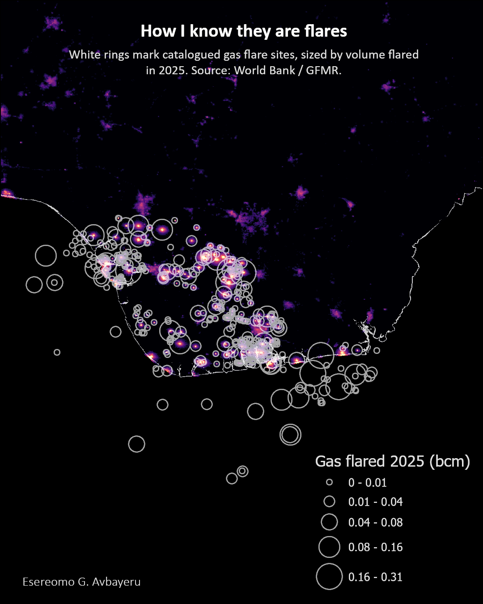
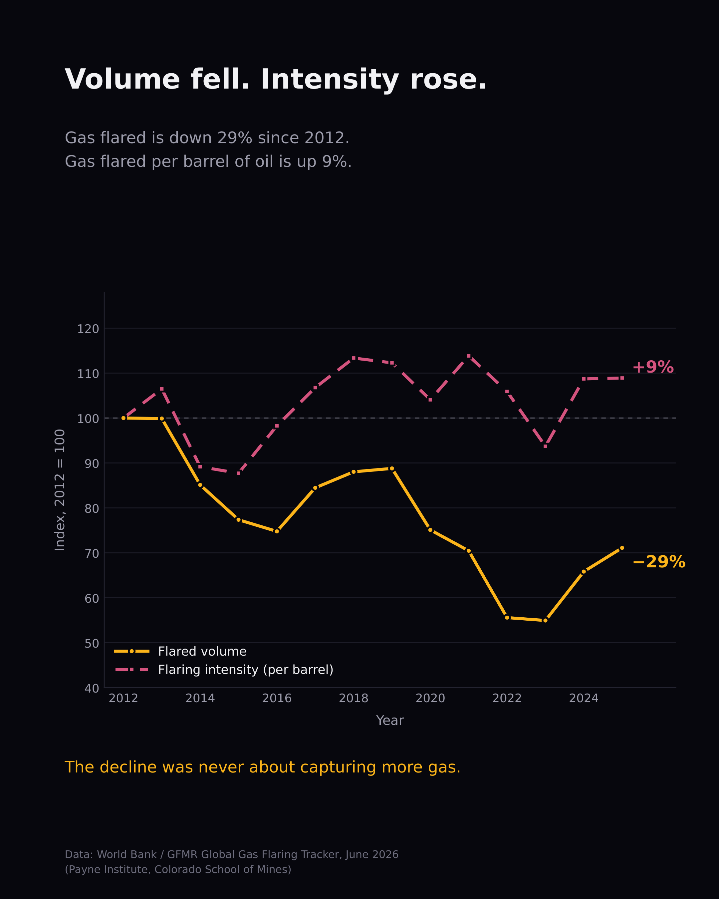
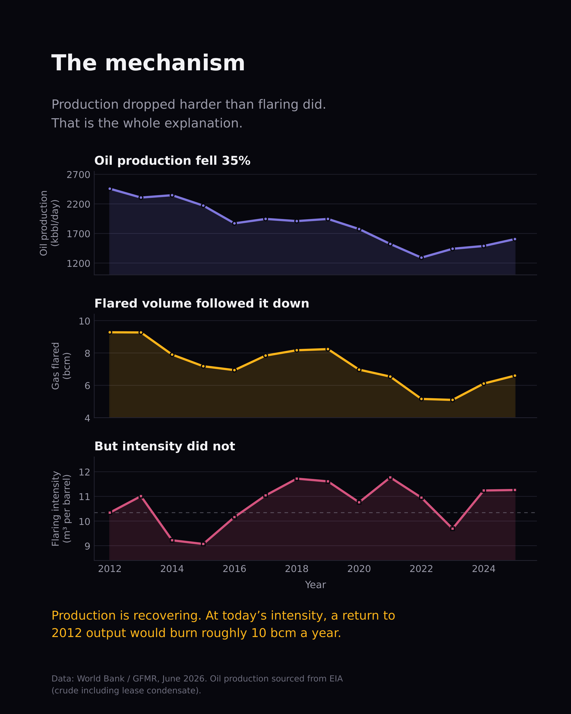
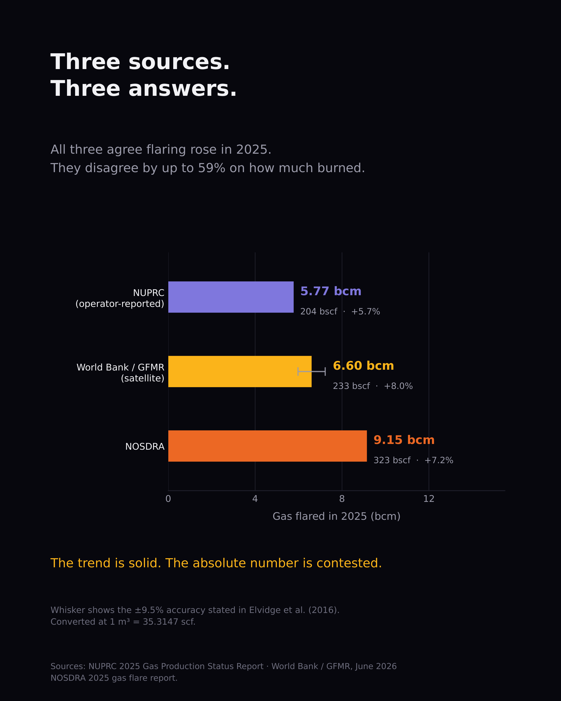

Overview
Nigeria is one of the world's largest gas-flaring nations, burning off associated gas at oil extraction sites across the Niger Delta. From space, those flares are visible as bright clusters in VIIRS nighttime imagery - indistinguishable from cities at first glance, but concentrated in the creeks and swampland where no city exists. This project started as a single map - "Nigeria After Dark" - built in Google Earth Engine from NOAA VIIRS Day/Night Band annual composites and styled in ArcGIS Pro, designed to make that distinction visible at a glance.
That map went viral on LinkedIn (21,000+ impressions) and was picked up by GIZ Nigeria (Deutsche Gesellschaft für Internationale Zusammenarbeit) for a 2–3 minute video presentation at a national gas flaring report launch event. The attention prompted a data-driven follow-up: a series of charts and analyses using World Bank GFMR, NUPRC, NOSDRA, and EIA data to answer a harder question - is Nigeria's gas flaring actually declining, or is the drop just tracking falling oil production?
The map

Validating the flares
Seeing bright spots in the Delta doesn't prove they're flares - it could be fishing boats, refineries, or settlement lighting. To confirm, World Bank / GFMR catalogued gas flare site locations (with individual-site volume estimates for 2025) were overlaid on the VIIRS imagery.

The data behind the map
Once the map established what and where, the follow-up asked: is this getting better or worse? Three analyses answered that question.



Impact
The original map was featured by GIZ Nigeria at a national gas flaring report launch event. Beyond the immediate reach on LinkedIn, the project demonstrated that combining freely available satellite data (VIIRS) with public flaring databases (GFMR) can produce policy-relevant analysis without any proprietary data access - and that presenting the results as data storytelling rather than a technical report is what gets it in front of the people who need to see it.
Tools & data sources
- Map - NOAA VIIRS DNB Annual V2.1 composite, processed in Google Earth Engine (JavaScript API), final cartography and annotation in ArcGIS Pro.
- Validation - World Bank / GFMR Global Gas Flaring Tracker (individual flare site coordinates and volumes, 2025).
- Time-series analysis - World Bank / GFMR (flared volume and intensity, 2012–2025), NUPRC 2025 Gas Production Status Report, NOSDRA 2025 gas flare report, EIA (Nigerian crude oil production, 2012–2025).